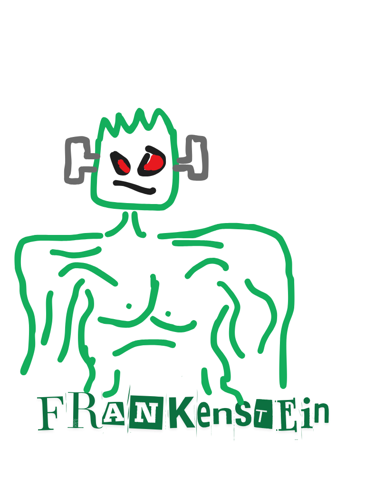

Frankenstein 1818
Mary Shelley, 1818. En ung forskare lyckas skapa liv, men flyr från det han skapat i samma ögonblick som det öppnar ögonen. Varelsen blir lämnad ensam i en värld som skräms av den, och börjar leta efter sin skapare.
Läs boken